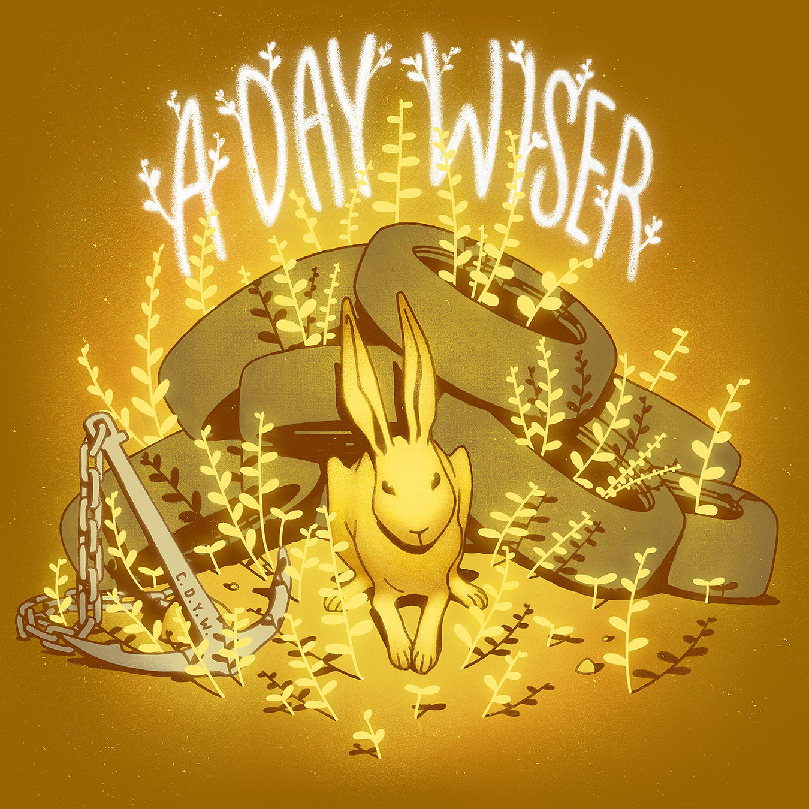

|  | Listen on Bandcamp Listen on Spotify Download from iTunes |
Dan Florio is solo artist, multi instrumentalist, producer, and computer programmer who writes and records imaginative music about dirt, nostalgia, dreams, animals, and bodies of water. All of his music is freely available on his Bandcamp page and can be downloaded for whatever price you feel like paying.